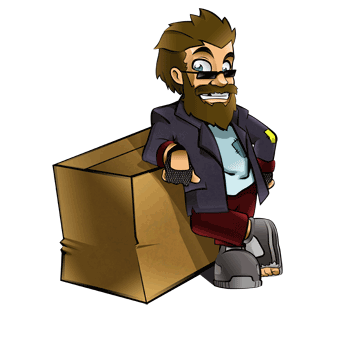
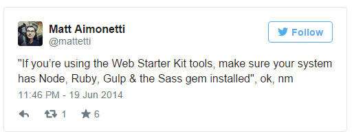
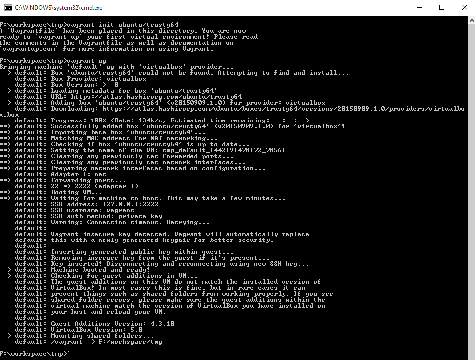

Give your development a portable home with Vagrant
Who Am I?
Been using computers before it was cool
(okay not really)
So what am I talking about?

No not that kind of vagrant
What is Vagrant?
Vagrant is a simple tool that makes it easy to setup Virtual Machines
Its a pretty powerful tool.
Only covering the basics
And why should I care?
- Documentation
- Always out of date.
- Mentoring
- People often forget things they have not used in a while.
- Onboarding
- Pretty much the previous two combined.
- Don't want to wait to get started.
I mean Contrived Example Time!
Sam - Developer
- Has been working on the project "forever"
- Lots of linux experience
- Likes to tinker with the build process
"Sam" by Heather L. Gilbraith
Alex - Designer
- Wants project to just work
- Wants focus on getting work done
- Often frustrated with Sam
"Alex" by Heather L. Gilbraith
You - ???
- New to the project
- Different Location?
- Often frustrated with Sam
Scene!
- Sam adds a new image compression tool to the builds
- Sam pushes the code
- Sam forgot to update the documentation to include instructions
- Windows - Good luck
- Linux - apt-get install libpng-dev
- OSX - brew install libpng
- Alex pulls down new code
- Alex's build brakes, and is now blocked. Yells for Sam
- FIGHT!

Now with vagrant!
- Sam adds a new image compression tool to the builds
- Sam adds "apt-get install libpng-dev" to Vagrantfile
- Alex pulls down new code
- Alex runs vagrant provision
- Alex keeps working
Real Life Example

So what is vagrant?
- A way to quickly setup a consistent environment
- It doesn't care what you are running, its only job is to setup a working environment
- Re-creatable
- Great tool for getting everyone to have a consistent environment
Did I mention consistent?
How does it work?
- Uses virtual machine software, at this point almost everything is available
- Virtual Box, VMWare, Hyper-V (windows), Docker, Probably more
- Downloads a VM image
- Applies steps
- Success!
- Profit
No really, How does it work?
- Install your favourite Virtual Machine System
- I suggest virtualbox
- Don't install (or at least don't run) multiple
- Install Vagrant
- Very easy installer for most platforms
- https://www.vagrantup.com/downloads.html
- Launch terminal/command prompt
- Change to project directory
- vagrant init ubuntu/trusty64
- Lots of options - https://atlas.hashicorp.com/boxes/search
- vagrant up
- vagrant ssh

Well that's not super useful.
Now what?
- Config file (Vagrantfile) is really well documented
- Can setup port forwards
- Shared directories
- Provisioning
- Simple Shell scripts
- Puppet
- Chef
- Ansible
- More
Bonus
# Vagrantfile
# Real file is super commented
Vagrant.configure(2) do |config|
config.vm.box = "ubuntu/trusty64"
# stuff
config.vm.provision "shell", inline: <<-SHELL
sudo apt-get update
sudo apt-get install -y libpng-dev
SHELL
end
Thanks!
YVR Developers Slack - https://yvrdev.herokuapp.com/